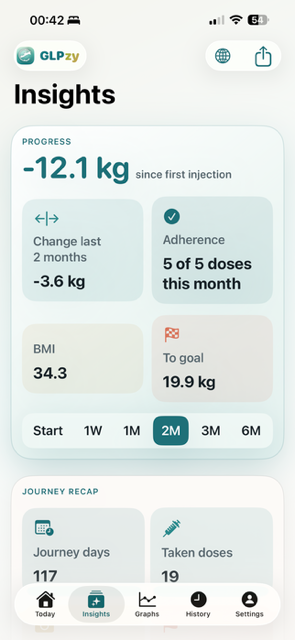

Logging
Track doses, weight, and symptoms in one routine
GLPzy keeps dose logging, weight logging, symptoms, appetite, notes, and reminders together so personal tracking stays easier to revisit.
GLPzy helps people using Wegovy keep a personal record on iPhone and iPad. Track doses, weight, symptoms, reminders, and review how things changed over time without a cluttered workflow.

GLPzy keeps dose logging, weight logging, symptoms, appetite, notes, and reminders together so personal tracking stays easier to revisit.
Use history, charts, and reminders to review what happened over time without moving between multiple apps or spreadsheets.
GLPzy can read Apple Health weight history, height, body composition, sleep, movement, workout, calories, protein, and water summaries in read-only mode if you enable it.
GLPzy focuses on doses, weight, symptoms, reminders, history, and review tools. It is designed for personal tracking, not diagnosis or treatment decisions.
Estimated Exposure Trend is a relative personal-tracking estimate. It is not a measured blood concentration. Not medical advice.
Always check with your clinician before making medical decisions.
Yes. GLPzy is an iPhone and iPad app for personal tracking of doses, weight, symptoms, reminders, and review history.
No. GLPzy is for personal tracking and review. Always check with your clinician before making medical decisions.
Optionally. GLPzy can read Apple Health weight history, height, body composition, sleep, movement, workout, calories, protein, and water context in read-only mode if you choose to connect it.
No in-app account is required for core tracking.